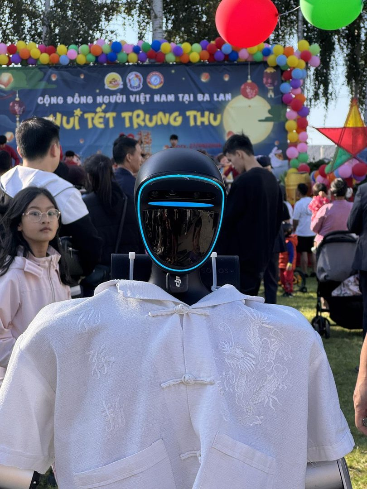

- Pradžia
- Renginių gidas
- Pramogos renginiams
Renginių gidas · Pramogos ir atrakcijos
Pramogos renginiams: idėjos, kainos ir kaip išsirinkti
Pramoga renginyje turi vieną užduotį — sukurti akimirką, dėl kurios svečiai kalbės ir kitą dieną. Šiame gide surinkome daugiau nei 40 pramogų idėjų įvairiems renginiams, jų orientacines kainas Lietuvoje, palyginimą pagal tai, ką kiekviena duoda, ir praktinius patarimus, kaip išsirinkti.

Pirmiausia — tikslas
Ta pati pramoga skirtingiems renginiams duoda labai skirtingą rezultatą. Todėl prieš lyginant kainas verta atsakyti, ko iš pramogos tikitės:
- Atmosferos visam vakarui — tada svarbiausia muzika, vedėjas ir šokių aikštelė.
- Vieno stipraus momento — šou programa ar netikėtas pasirodymas, apie kurį svečiai kalbės kitą dieną.
- Turinio socialiniams tinklams — pramoga, kurią svečiai patys filmuoja ir kuria dalijasi.
- Verslo vertės — kontaktų, dėmesio stende ar prekės ženklo matomumo.
Antras klausimas — kas jūsų svečiai: kiek jų, kokio amžiaus, ar bus vaikų. Trečias — kur vyksta renginys: salėje, sodyboje, lauke ar prekybos centre. Ketvirtas — biudžetas. Atsakę į šiuos klausimus, pusę pramogų atmesite iškart.
Pramogų rūšys: daugiau nei 40 idėjų
Vedėjai ir programos vedimas
- Renginio vedėjas — sujungia programą, valdo laiką ir veda žaidimus. Kaip išsirinkti — renginių vedėjas.
- Vestuvių vedėjas — atskira specializacija su tradicijomis ir žaidimais. Plačiau — vestuvių vedėjas.
- Konferencijos moderatorius — pranešėjai, diskusijos ir klausimų sesijos.
- Robotas vedėjas — humanoidinis robotas, kuris pasitinka svečius, pristato programą ir skelbia apdovanojimus. Plačiau — robotas vedėjas.
Muzika
- DJ — lanksčiausias pasirinkimas šokiams.
- Gyva grupė — kita energija, ypač vyresnei auditorijai.
- Styginių kvartetas ar saksofonininkas — aperityvui ir vakarienei.
- Karaoke — vėlyvam vakarui ir komandos renginiams.
Šou programos
- Iliuzionistas — scenos šou arba triukai iš arti prie stalų.
- Ugnies šou — įspūdingiausias lauke sutemus.
- Burbulų šou — vaikams ir šeimų šventėms.
- Šokių grupė ar akrobatai — trumpas, ryškus programos akcentas.
- Šviesų ar lazerių šou — efektingas perėjimas į šokių dalį.
- Dronų šou — įspūdinga lauke, bet Lietuvoje dar brangu ir sudėtinga organizuoti dėl oro erdvės taisyklių.
- Roboto šou — humanoidinis robotas atlieka šokio choreografiją ir bendrauja su publika.
Fotozonos
- Fotobūdelė su spauda, 360 vaizdo platforma, fotoveidrodis ir AI fotobūdelė — palyginome gide fotobūdelės nuoma.
- Karikatūristas — kiekvienas svečias išsineša portretą.
- Dekoratyvi fotosienelė — gėlės, neoninis užrašas ar logotipas.
Atrakcionai ir žaidimai
- Pripučiami batutai ir kliūčių ruožai — vaikams ir lauko šventėms.
- Kazino stalai — su krupjė ir žetonais vietoj pinigų.
- Virtualios realybės zona — technologijų renginiams ir jaunai auditorijai.
- Lazerių kovos — aktyviai komandai lauke ar salėje.
- Mechaninis bulius — garantuotas juokas ir žiūrovai aplink.
- Milžiniški žaidimai — „Jenga“, šachmatai, kroketas sodyboje.
- Protmūšis ir pabėgimo kambarys — komandos renginiams. Daugiau idėjų — komandos formavimo idėjos.
Kulinarinės pramogos
- Kokteilių baras ir barmenų šou — firminiai kokteiliai su renginio pavadinimu.
- Saldainių baras ir šokolado fontanas — vaikams ir suaugusiems.
- Cukraus vata ir spragėsiai — paprasta ir pigu lauko šventėse.
- Baristas su kavos stotele — konferencijoms ir parodoms.
Pramogos vaikams
- Animatoriai — žaidimai, personažai, veido piešimas.
- Mokslinis šou — eksperimentai, kuriuos vaikai stebi išsižioję.
- Burbulų šou ir kūrybinės dirbtuvės — ramesnėms šventėms.
Technologinės pramogos
- Humanoidinis robotas — vaikšto, kalba lietuviškai, šoka ir pozuoja nuotraukoms. Lietuvoje dauguma svečių gyvai jo dar nėra matę.
- AI fotobūdelė — paverčia nuotraukas paveikslais ar plakatais.
- Virtualioji ir papildytoji realybė — žaidimai ir produktų demonstracijos.
- Šviesų projekcijos — pastato ar salės sienų „atgaivinimas“.
Kiek kainuoja pramogos renginiams
Orientacinės kainos pagal viešus 2026 m. spalio skelbimus. Galutinė kaina priklauso nuo datos, trukmės, vietos ir atstumo:
| Pramoga | Orientacinė kaina |
|---|---|
| Cukraus vatos aparatas | ~45–50 € už parą |
| Pripučiamas batutas | nuo ~80 € |
| Vaikų animatorius | ~70–100 € per valandą |
| Ugnies šou | ~70–400 € |
| 360 vaizdo platforma | ~80–150 € per valandą |
| Fotobūdelė su spauda | nuo ~200 € už 2 valandas |
| Iliuzionisto programa | ~300–800 € ir daugiau |
| DJ, 4–7 val. paketas | nuo ~400 € |
| Vedėjas | nuo ~500 € už renginį |
| Vedėjas ir DJ su įranga | nuo ~600 € |
| Pilnai suorganizuotas įmonės renginys | nuo ~1 000 € už projektą |
| Humanoidinis robotas su operatoriumi | visa diena nuo 2 100 € be PVM |
Didelės šventės biudžetą patogu skaičiuoti vienam svečiui: 600 € kainuojanti programa šimtui žmonių — vos 6 € vienam, o 2 100 € kainuojantis akcentas trims šimtams svečių — apie 7 €.
Pramogų palyginimas: ką kiekviena duoda
Vertiname trimis kriterijais: įspūdis, turinys socialiniams tinklams ir verslo vertė. Lentelė sąmoningai supaprastinta — realiai viskas priklauso nuo jūsų tikslo.
| Pramoga | Įspūdis | Turinys soc. tinklams | Verslo vertė | Kam tinka |
|---|---|---|---|---|
| Humanoidinis robotas | Labai didelis | Labai didelis | Didelė: dėmesys, kontaktai, inovatyvumo įvaizdis | Įmonių renginiai, parodos, konferencijos, didelės šventės |
| Fotobūdelė | Nedidelis | Vidutinis | Nedidelė | Vestuvės, gimtadieniai, neformalios šventės |
| 360 vaizdo platforma | Vidutinis | Didelis | Vidutinė | Jauna auditorija, prekės ženklų renginiai |
| Iliuzionistas | Vidutinis | Nedidelis | Nedidelė | Vakarienės, mažesnės grupės |
| Gyva muzika | Vidutinis | Nedidelis | Kuria atmosferą | Vakariniai renginiai, gala vakarai |
| Ugnies šou | Didelis | Didelis | Nedidelė | Lauko renginiai sutemus |
| Virtualios realybės zona | Vidutinis | Nedidelis — sunku filmuoti | Vidutinė | Technologijų renginiai |
| Karikatūristas | Nedidelis | Vidutinis | Nedidelė | Ilgesni renginiai su laukimo zonomis |
Pramogos pagal renginio tipą
- Įmonės šventė ir kalėdinis vakarėlis — vedėjas, muzika, apdovanojimai ir vienas ryškus akcentas. Išsamus gidas — kalėdinio vakarėlio idėjos.
- Konferencija — moderatorius, pertraukų pramoga ir fotozona prie registracijos. Plačiau — robotas konferencijai.
- Paroda — pramoga, kuri sustabdo srautą praėjime ir atveda žmones prie stendo. Plačiau — robotas parodoms.
- Vestuvės — muzika, fotozona, pirmojo šokio akcentas ir pramogos vaikams. Išsamus gidas — pramogos vestuvėms.
- Gimtadienis ir jubiliejus — personalizuota programa, viktorina apie sukaktuvininką, vienas netikėtumas. Plačiau — robotas gimtadieniui.
- Komandos formavimas — bendra veikla, o ne stebėjimas. Idėjos — komandos formavimo idėjos.
- Miesto šventė ir festivalis — atrakcionai visoms kartoms, šou scenoje ir pramogos, kurias mato šimtai žmonių vienu metu.
- Atidarymas ir prekybos centras — pramoga, kuri pritraukia praeivius ir žiniasklaidą. Plačiau — robotas atidarymui ir robotas prekybos centrui.
- Mokyklos renginys — technologijos, kurias galima pamatyti gyvai. Plačiau — robotas mokyklai.
Pramogos pagal svečių skaičių
- Iki 30 svečių. Bendra veikla: dirbtuvės, degustacija, protmūšis, iliuzionistas prie stalų. Didelės scenos šou čia nereikia.
- 30–100 svečių. Vedėjas ar vedėjas su DJ, fotozona ir vienas akcentas po vakarienės.
- 100–300 svečių. Atskiras vedėjas ir DJ, šou programa, kelios pramogų zonos, kad nesusidarytų eilių.
- Daugiau nei 300 svečių. Pramogos, kurias mato visi vienu metu (scena, ekranai), ir pramogos, kurios juda tarp žmonių — pavyzdžiui, humanoidinis robotas.
Netradicinės ir modernios pramogos
Fotobūdelė, iliuzionistas ar karikatūristas kadaise buvo naujiena. Šiandien dauguma svečių juos matė ne kartą, todėl reakcija nuspėjama: pasidžiaugia ir eina toliau. Nieko blogo, bet ir nieko, apie ką būtų verta kalbėti kitą dieną.
Moderni pramoga skiriasi tuo, kad sukelia reakciją, kurios svečias nesitikėjo. Tokių pramogų vertė — ne tik įspūdis, bet ir turinys: vaizdo įrašai, kurie plinta socialiniuose tinkluose dar renginio metu, ir prekės ženklo signalas, kad įmonė eina koja kojon su technologijomis. Šiuo metu tokį efektą Lietuvoje kuria humanoidinis robotas, AI fotobūdelė, 360 vaizdo platforma ir šviesų projekcijos.
Svarbu tik viena: netradicinė pramoga veikia tol, kol ji nauja jūsų auditorijai. Todėl verta klausti ne „kas populiaru“, o „ko mūsų svečiai dar nematė“.
Kaip suplanuoti pramogas: 7 žingsniai
- Nustatykite tikslą — atmosfera, akcentas, turinys ar kontaktai.
- Sudarykite programą valandomis ir pažymėkite, kur reikia pramogos, o kur — ramybės pokalbiams.
- Pasirinkite vieną du akcentus ir kelias „tylias“ pramogas, kurios veikia visą renginį.
- Pasitikrinkite erdvę: vietą, elektrą, priešgaisrines taisykles, triukšmo apribojimus.
- Rezervuokite anksti — gruodžio ir vasaros savaitgaliais geriausi atlikėjai užimti pirmiausia.
- Gaukite pasiūlymus raštu: kas įeina, kiek valandų, kiek kainuoja atvykimas ir viršvalandžiai.
- Paskirkite vieną atsakingą žmogų, kuris renginio dieną bendrauja su atlikėjais ir prižiūri laiką.
Dažniausios klaidos
- Per daug pramogų. Jos konkuruoja tarpusavyje, o svečiai nespėja niekuo pasimėgauti.
- Akcentas per vėlai. Pagrindinė pramoga turi įvykti, kol salė pilna.
- Pramoga ne tai auditorijai. Tai, kas veikia jaunoje IT komandoje, ne visada tinka šeimų šventei.
- Pamiršta logistika. Nėra elektros, per maža erdvė ar salė draudžia dūmus — paaiškėja renginio dieną.
- Nėra plano B. Lauko pramogoms Lietuvoje lietus — ne išimtis.
Humanoidinis robotas: kada jis geriausias pasirinkimas, o kada ne
Robotas laimi, kai renginio tikslas yra dėmesys ir turinys: parodose, kur reikia sustabdyti srautą; konferencijose ir apdovanojimuose, kur reikia programos akcento; atidarymuose, kur reikia pritraukti praeivius; ir didelėse šventėse, kur svarbu, kad renginys būtų prisimenamas. Lietuvoje humanoidas vis dar retenybė — daugumai svečių tai pirmas kartas gyvai.


Būkime sąžiningi — robotas nėra atsakymas į viską:
- Jei tikslas — šokių aikštelė visą naktį, geras DJ padarys daugiau.
- Jei renginys labai mažas — iki 30 žmonių — efektas gali neatpirkti kainos.
- Jei svečiams svarbu išsinešti fizinį suvenyrą, geriau tinka fotobūdelė ar karikatūristas — arba jų derinys su robotu.
Visa diena su robotu ir operatoriumi kainuoja nuo 2 100 € be PVM, trumpesnis pasirodymas įkainojamas individualiai. Plačiau — humanoidinio roboto nuoma ir kainos.
Dažniausi klausimai
Dažniausiai užsakomi vedėjai, DJ ir gyva muzika, fotobūdelės ir 360 vaizdo platformos, šou programos (iliuzionistai, ugnies ar burbulų šou), atrakcionai vaikams ir kulinarinės pramogos, pavyzdžiui, kokteilių baras. Vis dažniau renkamasi ir technologines pramogas — virtualią realybę ar humanoidinį robotą.
Viešuose skelbimuose cukraus vatos aparatas kainuoja apie 45–50 € už parą, batutas — nuo maždaug 80 €, fotobūdelės paketas — nuo maždaug 200 €, vedėjas — nuo maždaug 500 €, iliuzionisto programa — nuo maždaug 300 €. Humanoidinis robotas su operatoriumi kainuoja nuo 2 100 € be PVM už visą dieną.
Pirmiausia nuspręskite, ko siekiate: atmosferos visam vakarui, vieno stipraus akcento, turinio socialiniams tinklams ar verslo kontaktų. Tada atsižvelkite į svečių skaičių ir amžių, erdvę ir biudžetą. Dažniausiai geriausiai veikia derinys: muzika atmosferai ir vienas ryškus akcentas.
Lauke puikiai veikia ugnies ir burbulų šou, pripučiami atrakcionai, milžiniški žaidimai, lazerių kovos, maisto stotelės ir humanoidinis robotas, kuris gali dirbti ir tarp minios. Visada turėkite planą B lietui.
Tos, kurių dauguma svečių dar nėra matę gyvai: humanoidinis robotas, AI fotobūdelė, 360 vaizdo platforma, virtualios realybės zona ar šviesų projekcijos. Netradicinė pramoga veikia tol, kol ji nauja jūsų auditorijai.
Paprastai užtenka vieno dviejų ryškių akcentų ir kelių pramogų, kurios tyliai veikia visą renginį — fotozonos, žaidimų ar vaikų kampelio. Per daug pramogų konkuruoja tarpusavyje ir vargina svečius.
Taip — vaikai robotą dievina. Tačiau mažai vaikų šventei namuose robotas dažniausiai per brangus: jis labiau atsiperka didesnėse šventėse, mokyklų renginiuose, prekybos centruose ir miestų šventėse, kur jį pamato šimtai vaikų ir tėvų.